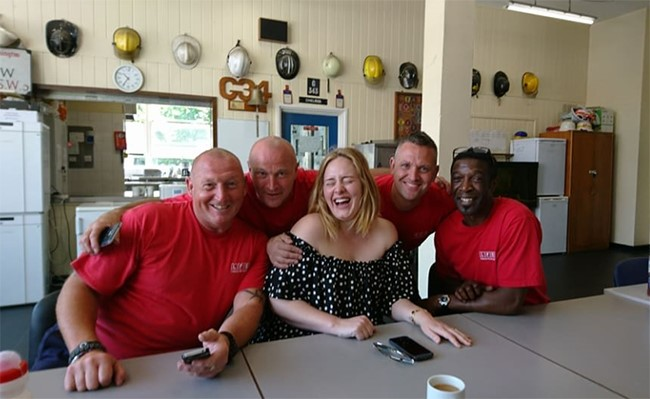

Adele has hinted that she plans to stop going on tours. The 29-year-old, who is wrapping up her 15-month stint on the road with a series of gigs in London, made the surprising revelation in a handwritten note, which has been shared on Instagram. The messages reads: "So this is it. After 15 months on the road and 18 months of 25 we are at the end. Touring is a peculiar thing, it doesn't suit me particularly well. I'm a real homebody and I get so much joy in the small things."
The award-winning singer's final few concerts, which have been The Finale, will take place at Wembley SSE Arena, concluding on July 2. The note continued: "Plus, I'm dramatic and have a terrible history of touring. Until now that is! I've done 119 shows and these last four will take me up to 123. It has been hard but an absolute thrill and pleasure to have done. I only ever did this tour for you and to hopefully have an impact on you the way that some of my favourite artists have had on me live."
She concluded: "And I wanted my final shows to be in London because I don't know if I'll ever tour again and so I want my last time to be at home. Thank you for coming, for all of your ridiculous love and kindness. I will remember all of this for the rest of my life." During her show on Tuesday evening, Adele addressed her final farewell on stage where she promised she would still continue to make new music. She told the audience: "I will always write music and I will always put it out. And I hope that you’re always here. I might never see you again at a live show. Who knows? But I will remember this for the rest of my life."
Adele has shown her support for firefighters who tackled the blaze at Grenfell Tower by stopping by their fire station for "a cup of tea and a cuddle". The 29-year-old pop star paid a visit to Chelsea Fire Station to meet some of the brave individuals who fought the fire in Kensington, and the team were understandably delighted by her surprise stopover. Sharing a series of photos on Facebook, firefighter Rob Petty wrote: "Not everyday the wonderfully grounded and caring Adele pops into Chelsea Firestation for a cup of tea and a cuddle X."

Adele paid a surprise visit to Chelsea Fire Station on Monday
The visit comes after the Hello singer spent time comforting those affected by the tragedy while attending a vigil for the victims, less than 24 hours after the fire took hold of the 24-storey building. Onlookers said the star seemed emotional as she spoke to those around her, and that she hugged a number of local residents. She was widely praised on social media for her actions. "Such a humble & down-to-earth woman," one wrote. Another said: "The fact that Adele has gone to Grenfell Tower and not said a word about it just proves his amazingly sincere she is…"
The pop star happily posed for pictures with firefighters
Police have so far named five victims of the fire – 79 people died or are missing presumed dead. Authorities have warned the final number of victims from the fire in the 24-storey block could still change. Commander Stuart Cundy said his priority was to identify the people who died in the building and to remove them as quickly as possible. But he warned that not everyone would be identifiable and the operation would take "many, many weeks". "This is an incredibly distressing time for families," he said. "It is really hard to describe the devastation the fire caused."
Comments